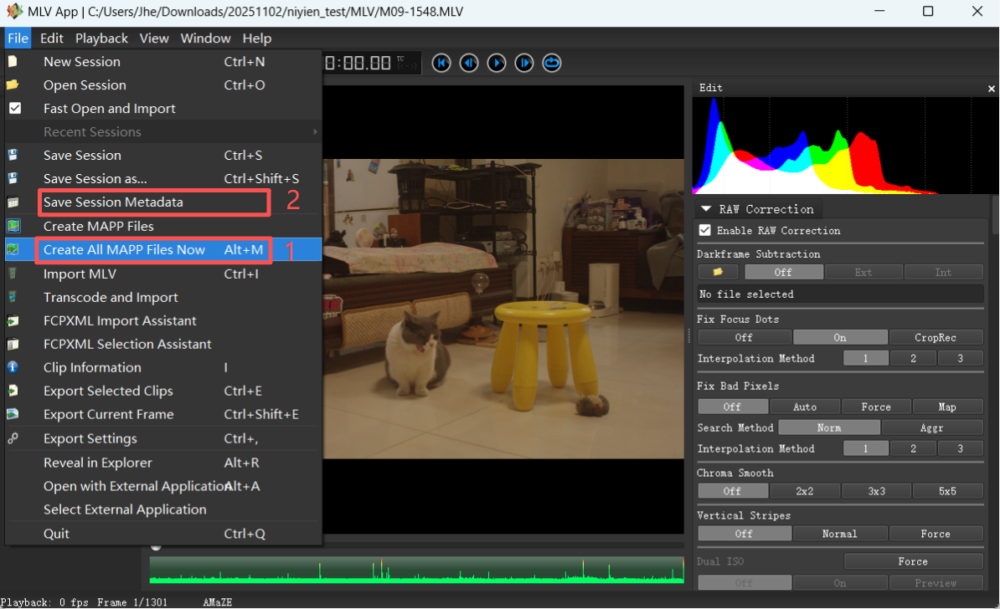
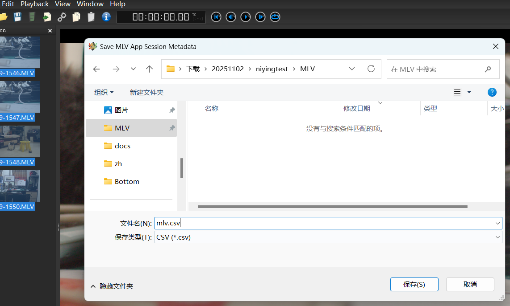
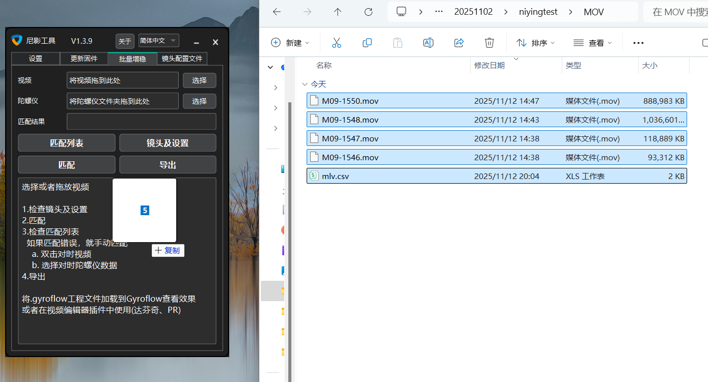
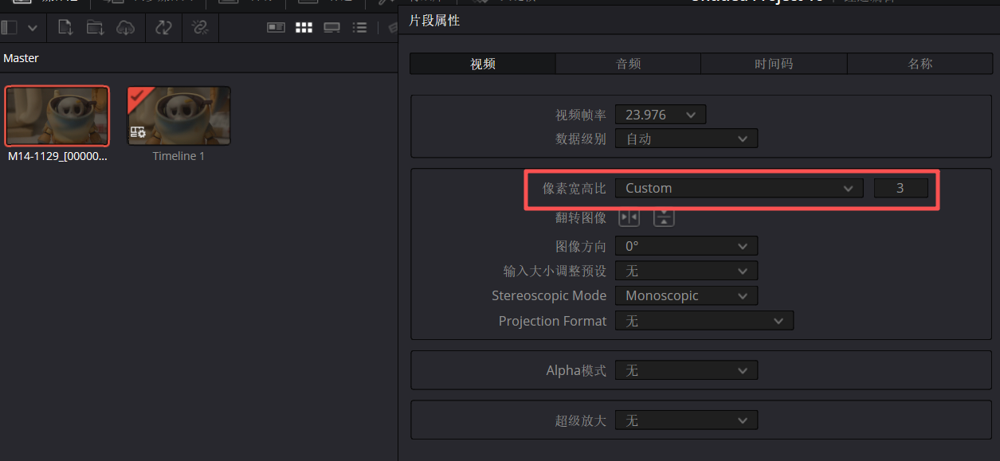

佳能魔灯陀螺仪增稳
注意：
MLV App的版本至少为V1.15
请先看以下视频，了解常规视频的增稳流程。
Prores流程：
步骤1：将MLV视频通过MLV APP导出为Prores视频。
步骤2：选择全部MLV视频，点击File，选择"Create All MAPP Files Now",然后再选择"Save Session Metadata"，保存为mlv.csv。


步骤3：将Prores视频和mlv.csv一起导入尼影工具中。

其他步骤和视频教程中一样。
CDNG流程：
CDNG需要在达芬奇或者Pr中使用插件，那需要再看
4.1 - 视频编辑器插件
，
4.5 - RAW,Log,10-bit,12-bit视频
。
如果使用了Squeeze或者变宽镜头，那还需要看一下
4.3 - 变宽
比如这里Height Stretch是0.33x，表示宽度上拉伸了3倍，那么在达芬奇中需要将片段属性里的像素宽高比，选择为CUSTOM，在后面填写3.然后再将插件的disable_stretch功能勾选。
